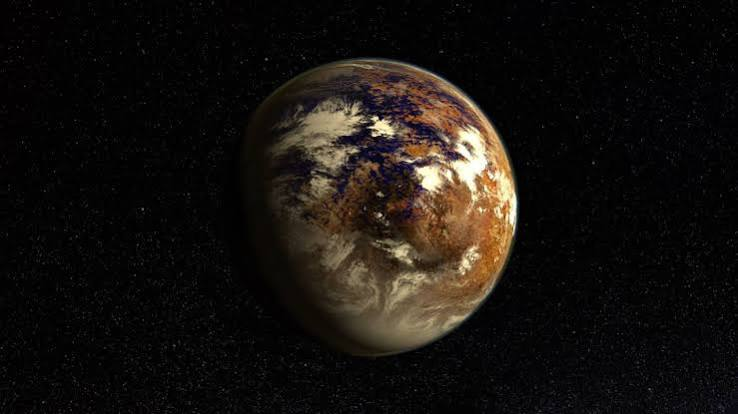
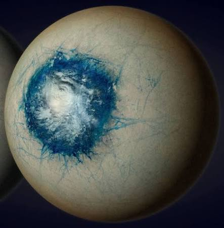
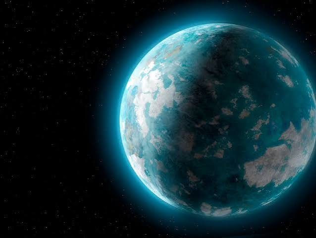

⌕
OBJETIVO GENERAL
Analizar la habitabilidad
Analizar las características de la zona habitable y los factores que determinan la posibilidad de que un exoplaneta presente condiciones adecuadas para la vida.
Explora la zona habitable, conoce mundos más allá de nuestro sistema solar y descubre qué condiciones podrían permitir la existencia de vida.
Explorar el universo →¿Qué hace que un mundo pueda ser habitable?
La búsqueda de vida fuera de la Tierra ha llevado a los científicos a estudiar los exoplanetas: mundos que orbitan estrellas distintas al Sol.
Uno de los conceptos fundamentales en esta investigación es la zona habitable, una región alrededor de una estrella donde, bajo condiciones atmosféricas adecuadas, podría existir agua líquida en la superficie de un planeta.
Sin embargo, estar en esta zona no garantiza que exista vida. También influyen la atmósfera, la composición del planeta, su actividad geológica y la radiación que recibe de su estrella.
Es la región alrededor de una estrella en la que las condiciones podrían permitir agua líquida en la superficie de un planeta.
Comprender las condiciones que podrían favorecer la vida.
Analizar las características de la zona habitable y los factores que determinan la posibilidad de que un exoplaneta presente condiciones adecuadas para la vida.
Identificar los principales factores que determinan la zona habitable de un planeta alrededor de una estrella.
Analizar exoplanetas candidatos a presentar condiciones habitables y reconocer las limitaciones de la evidencia científica actual.
Cinco exoplanetas que nos ayudan a estudiar las posibilidades de habitabilidad.
Importante: estar en una zona habitable o presentar características interesantes no significa que un planeta tenga vida. Su habitabilidad depende de múltiples condiciones que todavía se investigan.

01Es un exoplaneta situado aproximadamente a 4,24 años luz de la Tierra. Orbita Próxima Centauri, una estrella enana roja. Su posible habitabilidad depende, entre otros factores, de su atmósfera y de la radiación y actividad de su estrella.
 02
02
Es uno de los planetas rocosos del sistema TRAPPIST-1 y tiene un tamaño parecido al de la Tierra. Orbita una estrella enana roja y se encuentra en su zona habitable. Los científicos investigan si puede conservar una atmósfera y si sus condiciones permitirían agua líquida.
 03
03
Es un exoplaneta más grande que la Tierra que orbita una estrella similar al Sol. Su órbita se encuentra en la zona habitable estimada de su estrella. No obstante, todavía existen incertidumbres sobre su composición, su superficie y sus condiciones reales.

04Es un exoplaneta de mayor masa que la Tierra que orbita una estrella enana roja. Su densidad y otras propiedades lo convierten en un objeto interesante para investigar su composición y la posible presencia de una atmósfera.

05Es un planeta extrasolar cuya masa mínima estimada es varias veces la de la Tierra. Su órbita y las características de su estrella hacen que sea interesante para estudiar las condiciones potenciales de habitabilidad. Su composición y su capacidad para mantener agua líquida siguen siendo cuestiones abiertas.
La exploración de exoplanetas nos permite comprender mejor nuestro lugar en el universo. Aunque todavía no se ha confirmado vida fuera de la Tierra, investigar la zona habitable y las atmósferas planetarias nos acerca a responder una de las preguntas más fascinantes de la ciencia.
Consultar las fuentes →Recursos para profundizar en el estudio de la zona habitable y los exoplanetas.
Consulta las fuentes originales para verificar los datos de cada planeta y registrar la autoría de las imágenes utilizadas en el proyecto.